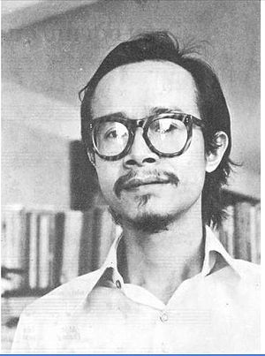

Rừng núi dang tay nối lại biển xa
Ta đi vòng tay lớn mãi để nối sơn hà
Mặt đất bao la, anh em ta về
Gặp nhau mừng như bão cát quay cuồng trời rộng
Bàn tay ta nắm nối tròn một vòng Việt Nam
Cờ nối gió đêm vui nối ngày
Giòng máu nối con tim đồng loại
Dựng tình người trong ngày mới
Thành phố nối thôn xa vời vợi
Người chết nối linh thiêng vào đời
Và nụ cười nối trên môi.
Từ Bắc vô Nam nối liền nắm tay
Ta đi từ đồng hoang vu vượt hết núi đồi
Vượt thác cheo leo, tay ta vượt đèo
Từ quê nghèo lên phố lớn, nắm tay nối liền
Biển xanh sông gấm nối liền một vòng tử sinh
Nhạc mẫu
Nhạc beat
Nhạc beat remix
Tác giả: Trịnh Công Sơn

Trịnh Công Sơn (28 tháng 2 năm 1939 – 1 tháng 4 năm 2001) là một nhạc sĩ người Việt Nam.
_ Ông được coi là một trong những nhạc sĩ lớn của âm nhạc đại chúng, Tân nhạc Việt Nam với nhiều tác phẩm rất phổ biến. Hiện nay chưa có thống kê chính xác về số tác phẩm để lại của ông (ước đoán con số không dưới 600 ca khúc).
_ Tuy nhiên số ca khúc của ông được biết đến rộng rãi là 236 ca khúc (cả lời và nhạc). Nhạc của Trịnh Công Sơn được nhiều ca sĩ thể hiện, nhưng thành công hơn cả là Khánh Ly và Hồng Nhung.
_ Ngoài ra, ông còn được xem là một nhà thơ, một họa sĩ, một ca sĩ và một diễn viên không chuyên.
_ Cuối đời, ông bị bệnh gan, thận và tiểu đường. Tuy nhiên, ông vẫn cố gắng sáng tác những ca khúc mới trong những năm cuối đời mình.
_ Ông mất tại Thành phố Hồ Chí Minh vì bệnh tiểu đường lúc 12 giờ 45 ngày 1 tháng 4 năm 2001, hàng ngàn người đã đến viếng tang và "có thể nói, chưa có nhạc sĩ nào mất đi lại được công chúng thương tiếc như Trịnh Công Sơn". Ông được an táng tại Nghĩa trang chùa Quảng Bình (phường Bình Chiểu - quận Thủ Đức).
_ Từ đó hàng năm giới hâm mộ đều lấy ngày này làm ngày tưởng niệm.
9 điều cần biết về bài hát Nối vòng tay lớn
1. Ra mắt lần đầu vào năm 1970
Nối vòng tay lớn được sáng tác vào năm 1968 nhưng tới năm 1970 ca khúc mới được hát vang tại trại Nối vòng tay lớn dành cho thanh niên, sinh viên, học sinh miền Nam được tổ chức trong ngày 24 và 25/4/1970.
2. Hát trên đài phát thanh vào ngày 30/4/1975
Đúng 3h chiều 30/4/1975, Đài phát thanh Sài Gòn phát lời giới thiệu "Tôi, nhạc sĩ Trịnh Công Sơn, rất vui mừng và cảm động gặp, nói chuyện với tất cả các anh em nghệ sĩ ở miền Nam Việt Nam này", rồi vị nhạc sĩ lần đầu cất tiếng hát ca khúc do chính mình sáng tác.
Nhạc sĩ Trịnh Công Sơn hát 'Nối vòng tay lớn' Đúng 30/4/1975, vị nhạc sĩ tài ba đã hát ca khúc này trên Đài Phát Thành Sài Gòn
3. Nằm trong sách giáo khoa
Bài hát Nối vòng tay lớn nằm trong Sách giáo khoa môn Âm nhạc và Mỹ thuật lớp 9.
4. Được dịch ra tiếng Anh
Bài hát này đã được Richard Fuller, một người Mỹ, dịch ra tiếng Anh với tên gọi Great Circle Of Vietnam.
Ông cũng là người đầu tiên chuyển ngữ những ca khúc của Trịnh Công Sơn như: Diễm xưa, Người con gái Việt Nam da vàng, Ca dao mẹ…
Nối vòng tay lớn phiên bản tiếng Anh Bài hát Nối vòng tay lớn phiên bản tiếng Anh được trình bày bởi nhạc sĩ Richard Fuller.
5. Được Tổng thống Mỹ Obama nhắc tới
Trong bài phát biểu trước giới trẻ Việt Nam trong chuyến thăm vào tháng 5/2016, cựu Tổng thống Barack Obama đã nói: "Chúng tôi vô cùng lạc quan vào tương lai quan hệ hai nước. Niềm tin của tôi chính là tin vào tình hữu nghị của chúng ta. Như Trịnh Công Sơn đã viết trong bài Nối vòng tay lớn".
6. Từng được hát bởi hơn 60 ca sĩ
Theo thống kê nhanh, ca khúc từng được biểu diễn bởi khoảng 60 ca sĩ và nhóm nhạc. Có thể kể tới Khánh Ly, Cẩm Vân, Thanh Lam, Mỹ Linh, Việt Hoàn, Đan Trường, Mỹ Tâm, Trần Lập, hay các nghệ sĩ trẻ như Phương Vy, Thảo Trang, Anh Khoa, Hồ Quang Hiếu,...
7. Xuất hiện trên 15 sân khấu trong 2 năm
Ca khúc "Nối vòng tay lớn" được trình diễn trên các sân khấu và chương trình truyền hình lớn trong 2 năm 2015 - 2016, ví dụ như Tự hào Tổ quốc tôi, Giai điệu tự hào, Mùa xuân đầu tiên... và trong các gameshow như Học viện ngôi sao, Nhân tố bí ẩn...
8. Chưa được cấp phép
Nối vòng tay lớn không nằm trong danh mục những ca khúc trước năm 1975 được cấp phép phổ biến vì chưa có cá nhân, đơn vị tổ chức nào xin phép. Hiện gia đình cố nhạc sĩ đang thực hiện các thủ tục xin phép.
9. Còn nhiều ca khúc gặp tình trạng tương tự
Trong số hơn 230 tác phẩm của cố nhạc sĩ, hiện chỉ có 77 bài được Cục Nghệ thuật Biểu diễn cấp phép. Nhiều ca khúc quen thuộc như Đêm thấy ta là thác đổ, Ca dao mẹ, Biển nhớ... cũng chưa nằm trong danh sách được cấp phép của Cục.
Nguồn: zing.vn